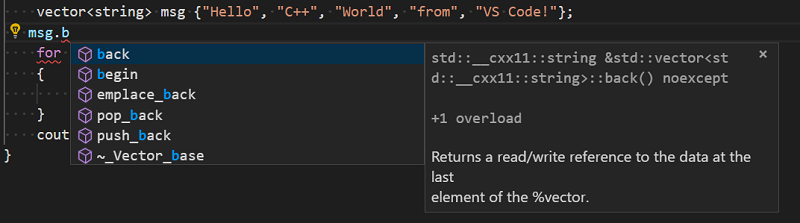
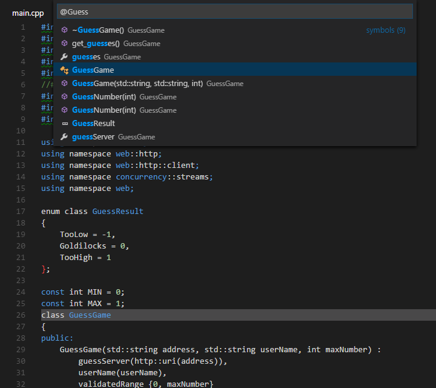
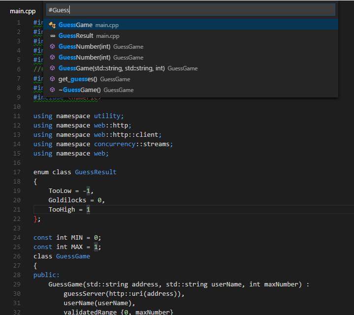

Edit C++ in Visual Studio Code
This topic provides a quick overview of general C/C++ editor features, as well as some that are specific to C/C++. For more information about editing in Visual Studio Code, see Basic Editing and Code Navigation.
The C/C++ extension supports Remote Development.
Editing features
The C/C++ extension for VS Code has many features that help you write code, understand it, and navigate around in your source files. To provide the best experience, the extension needs to know where it can find each header file referenced in your code. By default, the extension searches the current source directory, its sub-directories, and some platform-specific locations. If a referenced header file can't be found, VS Code displays a green squiggle underneath each #include directive that references it.
To specify additional include directories to be searched, place your cursor over any #include directive that displays a green squiggle, then click the lightbulb action when it appears. This opens the file c_cpp_properties.json for editing; here you can specify additional include directories for each platform configuration individually by adding more directories to the 'browse.path' property.
List members
When you type a member access symbol (. or ->) the editor will display a list of members. As you type additional letters, the list is filtered in real time:

Code formatting
The C/C++ extension for Visual Studio Code supports source code formatting using clang-format which is included with the extension.
You can format an entire file with Format Document (kb(editor.action.formatDocument)) or just the current selection with Format Selection (kb(editor.action.formatSelection)) in right-click context menu. You can also configure auto-formatting with the following settings:
editor.formatOnSave- to format when you save your file.editor.formatOnType- to format as you type (triggered on thekbstyle(;)character).
By default, the clang-format style is set to "file" which means it looks for a .clang-format file inside your workspace. If the .clang-format file is found, formatting is applied according to the settings specified in the file. If no .clang-format file is found in your workspace, formatting is applied based on a default style specified in the C_Cpp.clang_format_fallbackStyle setting instead. Currently, the default formatting style is "Visual Studio" which is an approximation of the default code formatter in Visual Studio.
The Visual Studio clang-format style is not yet an official clang-format style but it implies the following clang-format settings:
UseTab: (VS Code current setting)
IndentWidth: (VS Code current setting)
BreakBeforeBraces: Allman
AllowShortIfStatementsOnASingleLine: false
IndentCaseLabels: false
ColumnLimit: 0
To use a different version of clang-format than the one that ships with the extension, change the C_Cpp.clang_format_path setting to the path where the clang-format binary is installed.
For example, on the Windows platform:
"C_Cpp.clang_format_path": "C:\\Program Files (x86)\\LLVM\\bin\\clang-format.exe"
Enhanced semantic colorization
When IntelliSense is enabled, the Visual Studio Code C/C++ extension supports semantic colorization. See Enhanced colorization for more details about setting colors for classes, functions, variables and so on.
Quick Info
You can hover over a symbol to see an inline view of its definition:

Peek Definition
The Peek Definition feature displays a few lines of code near the definition inside a peek window, so that you don't have to navigate away from your current location.
To peek at a symbol's definition, place your cursor on the symbol anywhere it's used in your source code and then press kb(editor.action.peekDefinition). Alternatively, you can choose Peek Definition from the context menu (right-click, then choose Peek Definition).

Currently, the C/C++ extension doesn't parse code in a way that helps it distinguish between competing definitions based on how the symbol is used. These competing definitions arise when the symbol defines different things in different contexts, such as occurs with overloaded functions, classes and their constructors, and other situations. When this happens, each of the competing definitions is listed in the right-hand side of the peek window with the source code of the current selection displayed on the left.
With the peek window open, you browse the list of competing definitions to find the one you're interested in. If you want to navigate to the location of one of the definitions just double-click the definition you're interested in, or by double-clicking anywhere in the source code displayed on the left-hand side of the peek window.
Navigate source code
The source code navigation features provided by the C/C++ extension are powerful tools for understanding and getting around in your codebase. These features are powered by tags stored in a local database of symbol information. With the C/C++ extension installed, this database is generated whenever a folder containing C++ source code files is loaded into VS Code. The database icon appears next to the active configuration name ("Win32" in the image below) while the tag-parser is generating this information.
The icon disappears when all the symbols have been tagged.
Search for symbols
You can search for symbols in the current file or workspace to navigate your code more quickly.
To search for a symbol in the current file, press kb(workbench.action.gotoSymbol), then enter the name of the symbol you're looking for. A list of potential matches will appear; it is filtered as you type. Choose from the list of matches to navigate to its location.

To search for a symbol in the current workspace, press kb(workbench.action.showAllSymbols), then enter the name of the symbol. A list of potential matches will appear as before. If you choose a match that was found in a file that's not already open, the file will be opened before navigating to the match's location.

You can also search for symbols by accessing these commands through the Command Palette. Use Quick Open (kb(workbench.action.quickOpen)) then enter the '@' command to search the current file, or the '#' command to search the current workspace. kb(workbench.action.gotoSymbol) and kb(workbench.action.showAllSymbols) are just shortcuts for the '@' and '#' commands, so everything works the same.
Go to Definition
You can also quickly navigate to where a symbol is defined by using the Go to Definition feature.
To go to a symbol's definition, place your cursor on the symbol anywhere it is used in your source code and then press kb(editor.action.revealDefinition). Or, choose Go to Definition from the context menu (right-click, then choose Go to Definition). When there's only one definition of the symbol, you'll navigate directly to its location, otherwise the competing definitions are displayed in a peek window as described in the previous section and you have to choose the definition that you want to go to.
Next steps
Read on to find out about:
- Configure VS Code for Windows Subsystem for Linux
- Configure VS Code for MSVC
- Configure VS Code for Mingw-w64 and GCC
- Configure VS Code for macOS
- Configure IntelliSense for cross-compiling
- Basic Editing - Learn about the powerful VS Code editor.
- Code Navigation - Move quickly through your source code.
- Tasks - use tasks to build your project and more
- Debugging - find out how to use the debugger with your project
If you have any other questions or run into any issues, please file an issue on GitHub. You may be asked to provide logging information from the extension to help diagnose the issue. See C/C++ extension logging for help on providing extension logs.